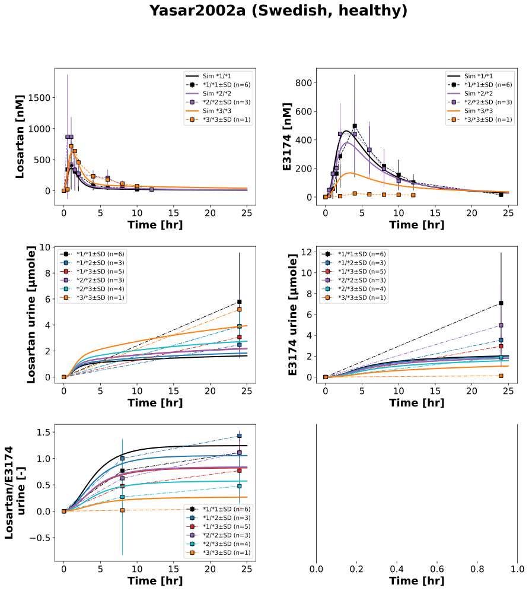
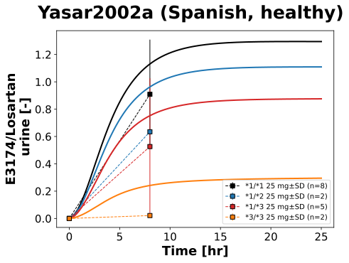

|  |
|  |
../../../../experiments/studies/yasar2002a.py
from typing import Dict
from sbmlsim.data import DataSet, load_pkdb_dataframe
from sbmlsim.fit import FitMapping, FitData
from sbmlutils.console import console
from pkdb_models.models import losartan
from pkdb_models.models.losartan.experiments.base_experiment import (
LosartanSimulationExperiment,
)
from pkdb_models.models.losartan.experiments.metadata import (
Tissue, Route, Dosing, ApplicationForm, Health, \
Fasting, LosartanMappingMetaData, Coadministration, Genotype,
)
from sbmlsim.plot import Axis, Figure
from sbmlsim.simulation import Timecourse, TimecourseSim
from pkdb_models.models.losartan.helpers import run_experiments
class Yasar2002a(LosartanSimulationExperiment):
"""Simulation experiment of Yasar2002a.
"""
info = {
"[Cve_los]": "losartan",
"[Cve_e3174]": "e3174",
"Aurine_los": "losartan_urine",
"Aurine_e3174": "e3174_urine",
"mr_e3174_los_urine": "exp3174_losartan_urine"
}
genotypes = {
"1_1": "*1/*1",
"1_2": "*1/*2",
"1_3": "*1/*3",
"2_2": "*2/*2",
"2_3": "*2/*3",
"3_3": "*3/*3",
}
genotypes_fig1 = {
"1_1": "*1/*1",
"2_2": "*2/*2",
"3_3": "*3/*3",
}
genotypes_tab3 = {
"1_1": "*1/*1",
"1_2": "*1/*2",
"1_3": "*1/*3",
"3_3": "*3/*3",
}
interventions = {
"LOS25": 25, "LOS50": 50
}
def datasets(self) -> Dict[str, DataSet]:
dsets = {}
for fig_id in ["Fig1", "Tab2", "Tab2A", "Tab3"]:
df = load_pkdb_dataframe(f"{self.sid}_{fig_id}", data_path=self.data_path)
for label, df_label in df.groupby("label"):
dset = DataSet.from_df(df_label, self.ureg)
if label.startswith("exp3174_losartan_urine"):
# hack to remove units
dset.unit_conversion("mean", 1 / self.Q_(1, "nmol/l"))
dsets[label] = dset
# console.print(dsets)
# console.print(dsets.keys())
return dsets
def simulations(self) -> Dict[str, TimecourseSim]:
Q_ = self.Q_
tcsims = {}
for number, genotype in self.genotypes.items():
for intervention, dose in self.interventions.items():
tcsims[f"po_{intervention}_{number}"] = TimecourseSim(
[Timecourse(
start=0,
end=25 * 60, # [min]
steps=500,
changes={
**self.default_changes(),
# "BW": Q_(self.bodyweight, "kg"), # no clear bodyweight information
"LI__f_cyp2c9": Q_(self.cyp2c9_activity[genotype], "dimensionless"),
"PODOSE_los": Q_(dose, "mg") * self.Mr.los/self.Mr.losp,
},
)]
)
# console.print(tcsims)
return tcsims
def fit_mappings(self) -> Dict[str, FitMapping]:
mappings = {}
# Swedish, 50 mg losartan
for k, sid in enumerate(self.info):
name = self.info[sid]
if "urine" in sid:
gtypes = self.genotypes
linestyle = "dashdot"
else:
gtypes = self.genotypes_fig1
linestyle = "--"
for number, genotype in gtypes.items():
mappings[f"fm_po_{name}_{number}"] = FitMapping(
self,
reference=FitData(
self,
dataset=f"{name}_{number}",
xid="time",
yid="mean",
yid_sd="mean_sd",
count="count",
),
observable=FitData(
self, task=f"task_po_LOS50_{number}", xid="time", yid=sid,
),
metadata=LosartanMappingMetaData(
tissue=Tissue.URINE if "urine" in name else Tissue.PLASMA,
route=Route.PO,
application_form=ApplicationForm.TABLET,
dosing=Dosing.SINGLE,
health=Health.HEALTHY,
fasting=Fasting.FASTED,
coadministration=Coadministration.NONE,
genotype=Genotype(genotype),
),
)
# Spanish
sid = "mr_e3174_los_urine"
name = "exp3174_losartan_urine"
for number, genotype in self.genotypes_tab3.items():
mappings[f"task_po_{name}_{number}_spanish"] = FitMapping(
self,
reference=FitData(
self,
dataset=f"{name}_{number}_spanish",
xid="time",
yid="mean",
yid_sd="mean_sd",
count="count",
),
observable=FitData(
self, task=f"task_po_LOS25_{number}", xid="time", yid=sid,
),
metadata=LosartanMappingMetaData(
tissue=Tissue.URINE,
route=Route.PO,
application_form=ApplicationForm.TABLET,
dosing=Dosing.SINGLE,
health=Health.HEALTHY,
fasting=Fasting.FASTED,
coadministration=Coadministration.NONE,
genotype=Genotype(genotype),
),
)
# console.print(mappings)
return mappings
def figures(self) -> Dict[str, Figure]:
return {
**self.fig1_tab2(),
**self.tab3(),
}
def fig1_tab2(self) -> Dict[str, Figure]:
fig = Figure(
experiment=self,
sid="Fig1_Tab2",
num_rows=3,
num_cols=2,
name=f"{self.__class__.__name__} (Swedish, healthy)",
)
plots = fig.create_plots(
xaxis=Axis(self.label_time, unit=self.unit_time), legend=True
)
plots[0].set_yaxis(self.label_los, unit=self.unit_los)
plots[1].set_yaxis(self.label_e3174, unit=self.unit_e3174)
plots[2].set_yaxis(self.label_los_urine, unit=self.unit_los_urine)
plots[3].set_yaxis(self.label_e3174_urine, unit=self.unit_e3174_urine)
plots[4].set_yaxis(self.label_mr_los_e3174_urine, unit=self.unit_mr)
for k, sid in enumerate(self.info):
name = self.info[sid]
if "urine" in sid:
gtypes = self.genotypes
linestyle = "dashdot"
else:
gtypes = self.genotypes_fig1
linestyle = "--"
for number, genotype in gtypes.items():
# simulation
plots[k].add_data(
task=f"task_po_LOS50_{number}",
xid="time",
yid=sid,
label=None if "urine" in sid else f"Sim {genotype}",
color=self.cyp2c9_colors[genotype],
)
# data
plots[k].add_data(
dataset=f"{name}_{number}",
xid="time",
yid="mean",
yid_sd="mean_sd",
count="count",
label=f"{genotype}",
color=self.cyp2c9_colors[genotype],
linestyle=linestyle,
)
return {
fig.sid: fig,
}
def tab3(self) -> Dict[str, Figure]:
fig = Figure(
experiment=self,
sid="Tab3",
num_rows=1,
name=f"{self.__class__.__name__} (Spanish, healthy)",
)
plots = fig.create_plots(
xaxis=Axis(self.label_time, unit=self.unit_time), legend=True
)
plots[0].set_yaxis(self.label_mr_e3174_los_urine, unit=self.unit_mr)
sid = "mr_e3174_los_urine"
name = "exp3174_losartan_urine"
for number, genotype in self.genotypes_tab3.items():
# simulation
plots[0].add_data(
task=f"task_po_LOS25_{number}",
xid="time",
yid=sid,
label=None, # f"Sim {genotype} 25 mg",
color=self.cyp2c9_colors[genotype],
)
# data
plots[0].add_data(
dataset=f"{name}_{number}_spanish",
xid="time",
yid="mean",
yid_sd="mean_sd",
count="count",
label=f"{genotype} 25 mg",
color=self.cyp2c9_colors[genotype],
)
return {
fig.sid: fig,
}
if __name__ == "__main__":
out = losartan.RESULTS_PATH_SIMULATION / Yasar2002a.__name__
out.mkdir(parents=True, exist_ok=True)
run_experiments(Yasar2002a, output_dir=Yasar2002a.__name__)
{kind=link}
{kind=link}